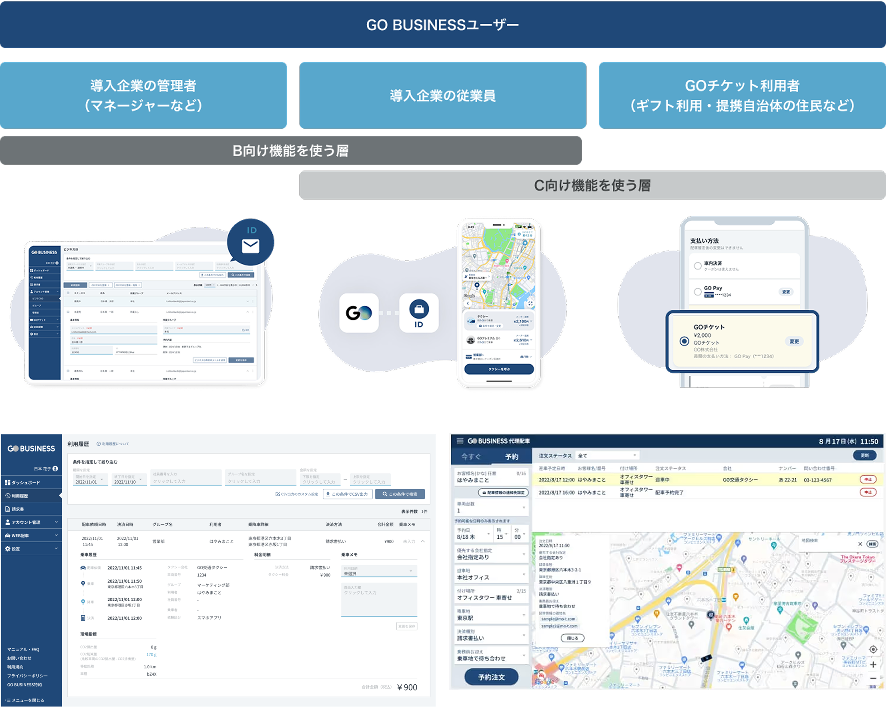
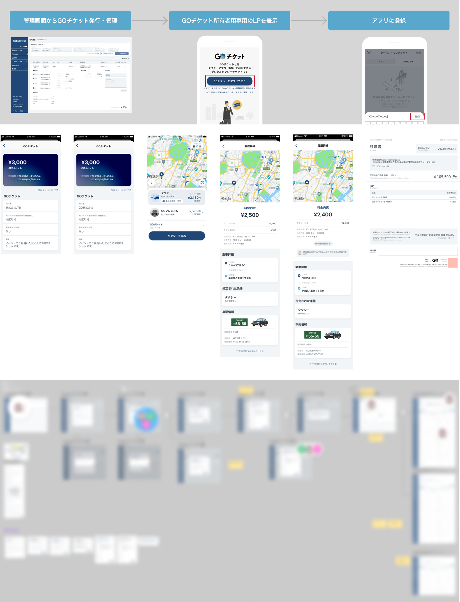

GO BUSINESS

- 概要
-
GO BUSINESSは会社のタクシー配車や予約、経費精算、領収書・利用管理を効率化・一元化するGOの法人向けWEBサービス。
GO BUSINESSのユーザーは導入企業の管理者・導入企業の従業員・GOチケット利用ユーザーに分類され、それぞれのユースケースに応じてデザインを作成する。
- 担当：UI/UX
- 使用ツール：Figman
- 2023年10月〜2025年5月
- 作業内容
- ⒈PdMと協業しながら仕様/機能に適したUIを検討・提案する(作っているデザインは、利用するユーザーストーリーに馴染むものか)
⒉レビューや仕様変更の指摘を受けて着地点をPdMと擦り合わせる
⒊エンジニアと連携後、場合によっては開発環境に合わせて仕様を調整する - 【GO BUSINESS 管理画面】
導入企業の管理者が従業員のタクシー利用を確認、請求書を発行する 
- 【GOチケットセット/複数枚のGOチケットを配布する機能、提携自治体で提供】
2025年2月現在、広陵町の妊婦の方に複数枚のタクシーチケットを配布する。導入する町村が使用するチケットの発行・管理を行うフロント画面のデザインを作成 